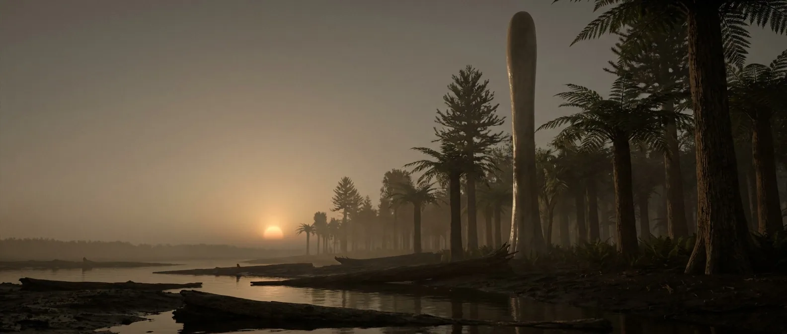

In sixty million years the land goes from ankle-high stems to thirty-metre forests. Roots appear, and with them soil. Seeds appear, and with them the first storable calories on Earth. Fish crawl out. Almost everything you need is invented in this window.
The first era that is not a countdown. Timber, fire, fresh water, abundant fish and seeds you can dry and store. What still limits you is nutrition: there is no carbohydrate staple and very little vitamin C anywhere.

Scale 0–40%. Effectively modern by the late Devonian, driven by the forests. Breathing is no longer a factor in anything on this page.
Scale 0–4,000 ppm. A 75% crash inside one period. Trees with deep roots break down rock and lock carbon into it, and the climate cools as a direct result.
Scale 0–30 m. From 10 cm to 30 m in one period. Timber, shade, shelter, tool handles and structural material all arrive at once.
Roots go deep for the first time, so rock becomes soil and rivers start to meander instead of running in braided sheets. The land begins to hold water.
Scale 0–24 h. About 396 days per year, and coral growth bands from this period preserve the count directly.
The Late Devonian extinctions unfold over millions of years, mostly through ocean anoxia. Slow enough that a person would never notice one happening.
Everything a pre-industrial human needs from the landscape is now present: fuel that burns hot and long, poles and planks, bark, fibre, shade, and a river running clear because roots are holding the banks together.
The Devonian is called the Age of Fishes for good reason. Rivers and shallows are full of them, they are fatty, and they are catchable with a woven trap you can now actually build.
Early seed plants appear late in the period. Seeds are dry, dense, portable and keep for months. Nothing before this era could be saved for later, and that is the difference between surviving and settling.
Still the recurring gap. Devonian plants are ferns, horsetails and progymnosperms; some greens and spore tissue will carry some vitamin C, but nothing reliable. You would be experimenting with your own liver as the test bench.
Realistically the ceiling is a deficiency disease or an infected injury rather than the environment. The Devonian is the first era that is simply somewhere you could live.
Pick the late period, near a river, inside the forest belt.
Near modern. Non-issue.
Clear meandering rivers, the first on Earth to run clear rather than braid across bare rock.
Fish, arthropods, early tetrapods, and seeds you can dry. The first storable calories in history.
Real wood fires. Hot, long-burning, controllable.
Timber and bark. You could build a structure that outlasts you.
Almost none. No grain, no tubers, no fruit. Seeds are the closest thing and they are small.